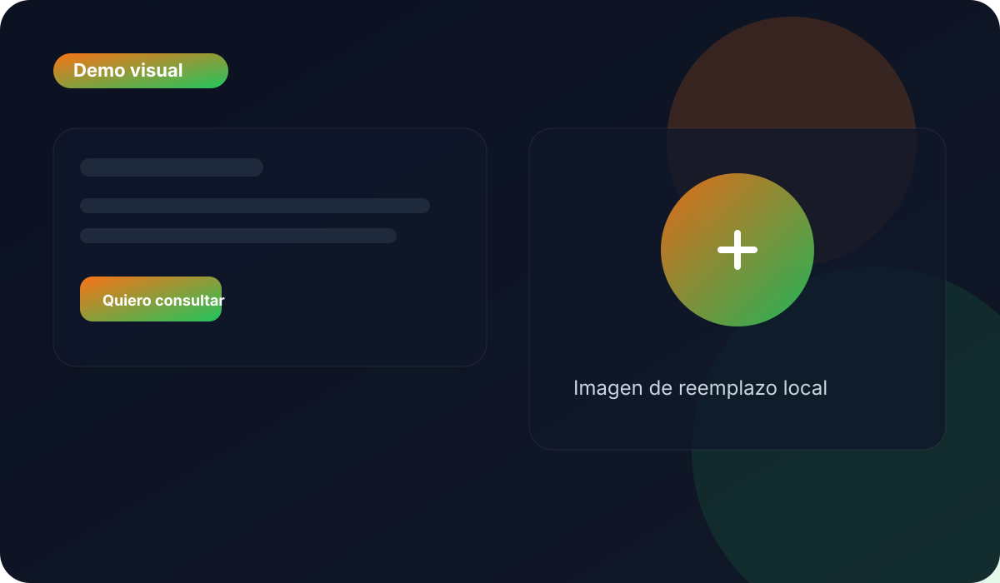

Transmití confianza desde el primer clic
Una web clara, cálida y profesional ayuda a que la persona se sienta segura y se anime a dar el siguiente paso.
Más consultas
Más personas se animan a escribirte.
Imagen profesional
Tu práctica se ve seria, clara y cercana.
Contacto simple
La persona entiende cómo agendar sin vueltas.
Espacio terapéutico
Calma, escucha y claridad
CTA
Agendá tu primera consulta
Mensaje
Un lugar seguro para empezar

Objetivo
Transmitir calma y seguridad
La web reduce fricción y ayuda a dar el primer paso.
Problema
Lo que puede estar frenando tus consultas
Dificultad para generar confianza online
Si la web no transmite seguridad, cuesta dar el paso.
Poca presencia digital
Sin una presencia clara, tu servicio pasa desapercibido.
Solución
Una web clara, cálida y profesional
La estructura está pensada para explicar tu forma de trabajar, mostrar tu valor y facilitar el contacto directo.
Calidez
Acompañás sin frialdad y sin ruido visual.
Explicación clara
La persona entiende qué hacés y cómo empezar.
Contacto directo
Resolver dudas y agendar queda a un clic.
Servicios
Lo que podés mostrar en la web
Tu enfoque de trabajo
Explicás cómo acompañás y qué le pasa a la persona al empezar.
Espacio seguro
Mostrás un lugar tranquilo, humano y profesional.
Contacto simple
Hacés fácil el primer paso y reducís la fricción.
Beneficios
Lo que vas a lograr con tu web
Más consultas
Una web pensada para convertir visitas en mensajes.
Imagen profesional
Tu práctica se presenta con más claridad y confianza.
Testimonios
Lo que diría una paciente después de verla
“Me sentí más segura para pedir turno porque la web transmitía calma.”
Lucía, paciente
“Ahora explico mejor mi forma de trabajar y recibo consultas más claras.”
Marta, psicóloga
“La web me ayuda a generar confianza antes de la primera charla.”
Agustina, terapeuta
Ejemplo real
Así podría verse tu web si querés transmitir confianza desde el inicio
Esta demo muestra cómo una landing puede ayudarte a comunicar calma, profesionalismo y facilidad de contacto.
CTA final
Solicitar consulta
Si querés una web que te ayude a generar más consultas y a comunicar mejor tu servicio, te puedo ayudar a armarla.
Contacto